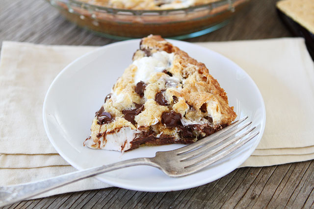

S'mores Pie Recipe

A tasty pie with graham cracker crust on top and bottom, filled with the s'mores essentials
A nice and gooey way to end a warm summer night
Ingredients
- 1 stick softened butter
- 1/2 cup white sugar
- 1 whole egg
- 1 tsp vanilla
- 1 cup flour
- 1 cup graham cracker crumbs
- 1 tsp baking powder
- 7 oz (1 container) marshmallow creme
- 8 whole (1.55oz bars) Hershey bars unwrapped
- 1 cup mini marshmallows
- 1/4 cup chocolate chips
Steps
-
Preheat oven to 350°F and spray a 9″ pie pan with baking spray.
-
In a large bowl beat butter and sugar together until combined, then add egg and vanilla and stir them in. Stir in flour, graham cracker crumbs and baking powder.
-
Divide the dough in half. Press half the dough in the bottom and up the sides of the prepared pie pan. Evenly spread the Marshmallow Creme over the bottom crust. Separate chocolate squares and place on top of the Marshmallow Creme. Place 1 cup of marshmallows on top.
-
Using the remaining crust, pat sections of dough on top of and around all the marshmallows (they will still show through and that is great!). Sprinkle with 1/4 cup chocolate chips, then bake 20 minutes until lightly browned.
-
Remove pan from oven and set it on a wire rack. Cool completely before cutting, or you will have a gooey mess. Not that I know …
Recipe Link